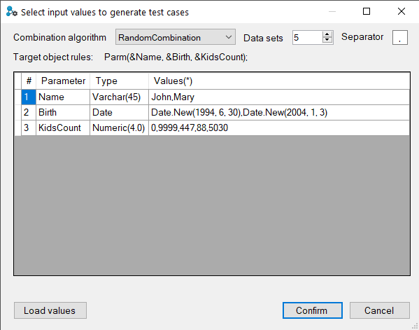

This form will be prompt any time you select the Create Unit Test option over a unit-testable kbobject only when property Parameter values is set to Prompt.  Combination algorithmThis combo box has all the combination algorithms available to generate test cases. These options are the following. Random combination: Test cases are built using random values for each parameter. Cartesian product: All possible combinations between parameter values are made. The number of test cases will be the product of data values count for every parameter. For instance, if the object has 3 parameters and you input 5 values for each parameter, there will be 5*5*5 test cases: 125. Pairwise combination: All pairs are combined between test cases. You can find more information at http://pairwise.org/ Data setsThis option allows you to set how many test cases will be generated. Currently, this makes sense only for the Random combination algorithm. SeparatorAllows setting which character will be used to separate the values entered for the parameters. Default value is ',' (comma). Target object rulesThis label shows the parm sentence in the rules part for the selected object. Parameter values grid#: shows the position index in the rules part for the current parameter. Read-only. Parameter: the name of the parameter. Read-only. Type: the type of the parameter. Read-only. Values: Input field to set comma-separated values that will be used for the selected algorithm to generate test cases. Load valuesUseful to fill with data generated by GXtest. You can use it as it is given or you can modify it. ConfirmWhen you finished the configuration, click the Confirm button to generate the unit test and test cases according to the configuration you made. Errors Input values are required except for cells marked as auto-generated; so, if data is missing in any row, an error message indicating this situation will be shown. Considerations:Date and DateTime: Plain date formats and GeneXus Type initializations are allowed. For example, 27/04/2014 17:54:34 and DateTime.New(2014, 4, 27, 17, 54, 34) works as well. Collections: values go between square brackets ([]) and separated by Separator. For example, if the parameter is a collection of varchars, you could input: [],[first phrase,second phrase,third phrase],[only one item phrase]. [] represents an empty collection. External Objects, SDTs, and Extended Types: cannot be inserted manually in a single line and will be auto-generated by GXtest. You can modify the generated Data Provider after completing the unit test creation. Characters: left an empty space if an empty value is intended to be used as a test value. In case the data values include a comma, it needs to change the data values separator. Numerics: decimals separator is the dot. AvailabilityThis feature is available since GeneXus 16 upgrade 9. |